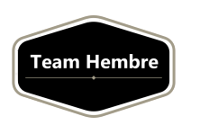
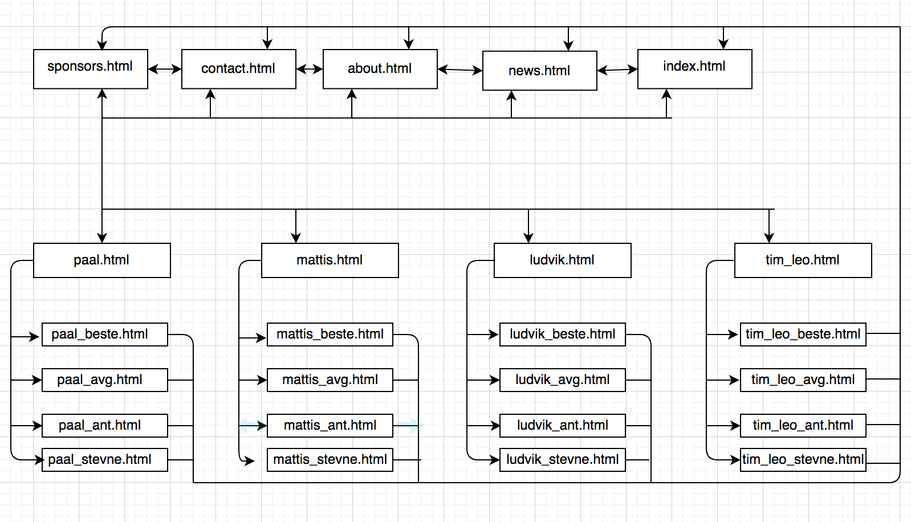
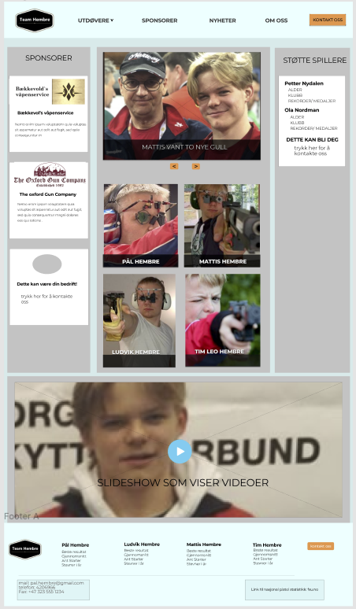
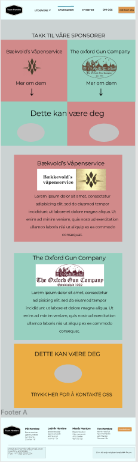
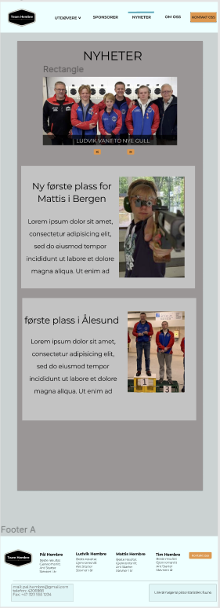
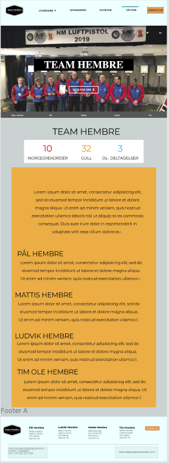
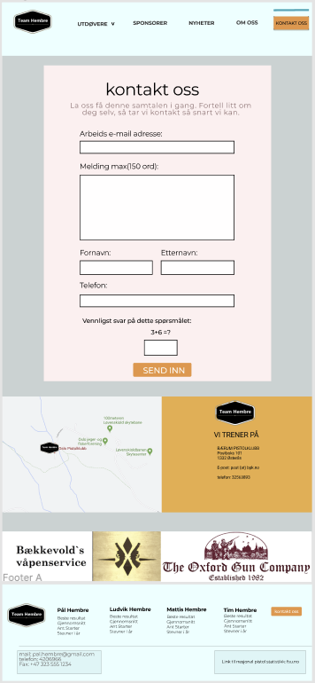
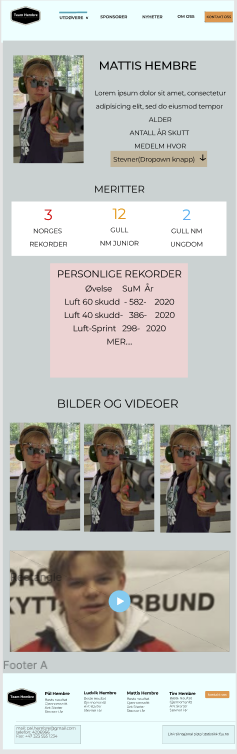
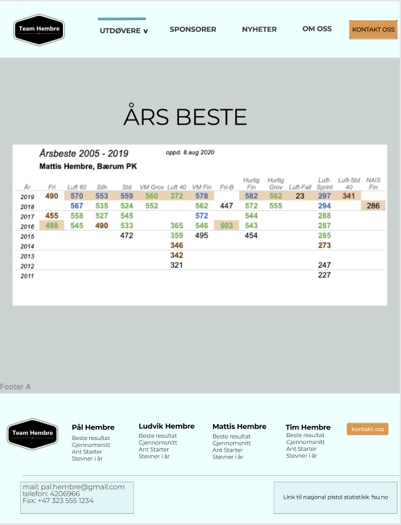

P2 Project Requirements
Casper, Egil, Karan, Martin og Mattis
21. September 2020
Administrative Details
Client name: Pål Hembre (owner and maker of the site)
Website name: Team Hembre
Contact person: Pål Hembre
Purpose, goals and audience
Pål explained to us that the purpose of the website is to attract sponsors to further his and his 3 sons carreers as shooting athletes. Our goal is to structure and prioritize the information so that the accomplishments of the athletes become clear and therefore attract potential sponsors. The intended audience for this webpage is going to be mainly sponsors but also the general public who are eager to know more about this families shooting ability. For the sponsors it would be necessary to see if the different members of the Hembre family has achieved something remarkable, like gotten medals or broken records. This can be showed by statistics and also videos. For the general public the pictures, videos and statistics seem interesting.
Navigation Structure
The structure of Team Hembres website is to be both linear and hierarchical as the navigation-bar offers a course to each “main” page, as well as a dropdown-menu (also located on the navbar) linked to the pages of the team members. Each athlete has three subpages of their own which displays individual “best of” stats, as well as a dropdown-menu with a list of links to attended competitions throughout their career. These subpages are naturally only available through their own respective pages, and is the only information that is not reachable from every page throughout the website.
Visual presentation of the structure: 
The reasoning behind this structure is to make the information about the athletes as accessbile and as attractive as possible for the purpsoe of convinving potential sponsors and donors. By connecting most of the pages with general information in the navbar, the user will find it easy to move around on the website and navigating to their desired information. The subpages are isloated to not confuse the user with statistics about the wrong athlete.
Page Layout and Apperance
We choose a professional look because we want the website tho look as formal as possible. And we also focused especially that the website where very easy to navigate to because the audience is very wide and there are many elderly people that doesn't know computers well. So we focused on having an easily navigatable navigation-bar width some dropdown-elements so you can navigate where you want from every page since every pages have a navigation-bar.
in the navigation-bar there is a tab with athletes called "utøvere" width a dropdownmenu thath showcases the athletes and i you hover over the athletes a new dropdownmenu apears so if you want to go right to the statistics if your desire source
there is also a tab that leads you to the news called "nyheter". And one tab that leads you to the about us called "om oss" And one tab that leads you to the kontack us called "kontakt oss"
the layout of the navbar width the dropdownmenu and footer looks like this on the main page and the other pages on a computer
and the layout of the navbar width the dropdownmenu and footer looks like this on the main page and the other pages on a mobile/small devieces, width no hover but a clickable dropdownmenu and also the menu is hidden from start and you have to click on it to initiate and it will show in a column, instead of a row as the pc-version does. This is to make it easier and more clean on the mobile.

The specific styling for the website that will apply to all pages can be found below:
Font
"Comic Sans MS" and backup is sans-serif, The title is a temporary logo whith a width of 200px.
The a header-text/navbar has a size of 25pt and the paragrafs has has 15pt
Color Scheme
nav-color:#E8FFFF
background:#C9D3D3
element-background:#C4C4C4
text-color:#000
background-text-color:none
Secondary-teks-color:#F2F2F2
Secondary-background-teks-color:#000000BF
Navigation and Goals
...
and the layout of the navbar width the dropdownmenu and footer looks like this on the main page and the other pages on a mobile/small devieces, width no hover but a clickable dropdownmenu and also the menu is hidden from start and you have to click on it to initiate and it will show in a column, instead of a row as the pc-version does. This is to make it easier and more clean on the mobile.
The specific styling for the website that will apply to all pages can be found below:
Font
"Comic Sans MS" and backup is sans-serif, The title is a temporary logo whith a width of 200px.
The a header-text/navbar has a size of 25pt and the paragrafs has has 15pt
Color Scheme
nav-color:#E8FFFF
background:#C9D3D3
element-background:#C4C4C4
text-color:#000
background-text-color:none
Secondary-teks-color:#F2F2F2
Secondary-background-teks-color:#000000BF
The width of the body should be 90% of the width
The style of the footer and navigation-bar is as displayed on the pictures above.
Content
Hereunder we will explain what is going to be displayed on each page of the website. There will be 21 individual pages in total, but some of these are bundled together because they have the same layout. The websites color palette is going to stay consistent throughout most of the pages as we opted for cold” colors in the background, and some warmer colors in the foreground, so that clickables and other more important aspects pop more out of the page.
Homepage - index.html
The homepage will be the first webpage the user sees. Therefore, we want to make it easy and intuitive for the user to navigate with a navigation bar. The navigation bar will be located on the top of the page and will contain the following buttons: logo, om oss (about us), kontakt oss (contact us), sponsorer (sponsors) and utøvere (athletes). Each button will take the user to a different page and when users hover over the “utøvere”-button they will get a dropdown menu with links to the underlying pages for each individual athlete. The navigation bar is the same on all the following pages and the logo will be usable as a home button for easy backtracking to the homepage.
Our client wants the homepage to include pictures, videos, news, sponsors and supporting players. Because of that, the homepage is going to be split vertically into three sections. The far left of the page will feature the logos of Team Hembres´ sponsors, which will also be clickable links that bring the user to the sponsors´ own websites. The far right of the page will include a list of all of Team Hemres´supporting players. As for the middle, we want to include a lot of interesting news about Team Hembre, and we believe that the most space-efficient way to do that is with an interactive slideshow where the user can choose to go back and forth. Underneath this slideshow we will have a section with pictures of all the 4 athletes and their respective names. The user will be able to click on these pictures for easy navigation to each individual athletes’ personal site. Right above the footer there will be another slideshow with different videos of Team Hembre participating in events or other related material.
Just like the navigation bar, the footer will be the same for every page. The footer consists of the logo, links to the individual athletes, the “kontakt oss”-button, Pål Hembres´ personal contact information and a link to the national shooting statistics.
Sponsorer - sponsors.html
The sponsor page will feature more information on the teams´sponsors. This page is meant to market the sponsors, as well as to thank them for their support. At the top of the page their logos will be featured and users who click on the logos will be taken further down on the page where more information about the sponsor is given. Here the page will have a link to external sponsor-pages as well. This page will also veer a little from the color pallet chosen for the other pages, which we believe will be a nice mix up, and will differentiate the page a little since it will be the only page not focused on Team Hembre. This page will also fulfil the goal of showing odd the sponsors more than just on the front page and give them the recognition Pål Hembre asked for.
Nyheter – news.html
The purpose of the news page will be to update the user of recent happenings, be it competitive results or other interesting developments at Team Hembre. At the top of this page we will have the same slideshow as seen on the homepage, but it will however be possible to post news stories with a little more context further down the page.
Om oss – about.html
The about us page will consist mostly of information about Team Hembre as a whole, to give the user some backstory on how this organization came to be. A team photo will be located at the top of the page and below that there will be a box that displays Team Hembres´ merits collectively. Further down there will be some informational text about the entire organization, as well as some short texts that serves as an introduction to each member individually.
Kontakt oss - contact.html
The goal of this page is mainly to be a way for potential sponsors or supporting players to get in touch with the team. The page will give the user the option to leave a message by filling in a small form. Underneath the form there will be information on where the team practices. Here we will put the address and phone number, as well as a map showing the location of the training facilities. Right over the footer we will also show the sponsors´ logos again.
Utøvere
- paal.html - mattis.html - ludvik.html - tim_leo.html
The individual pages for each athlete will have the same layout. These pages are meant to give the user more information about each of the athletes and highlight their accomplishments in the sport. On the top-left side of the page we will put a picture of the athlete in question, and on the top-right there will be more generic information like age and years of experience. Here we will also put a dropdown menu that shows a selection of different events the athlete has participated in.
Further down on the page we will have a couple of boxes, showing the athletes merits and their personal best scores. These pages will also contain links to the respective athletes’ best competitive result, their average score and number of starts. These pages will only be showing one table that covers the whole page, so while they will be individual to each athlete, they will still have the exact same layout.
Beste resultat
- paal_beste.html - mattis_beste.html - ludvik_beste.html - tim_leo_beste.html
These pages will display a table that shows the athletes best scores this in all the different events the last few years.
Gjennomsnittsscore
- paal_avg.html - mattis_avg.html - ludvik_avg.html - tim_leo_avg.html
These pages will display a table that shows the athletes average score in all the different events the last few years.
Antall starter
- paal_ant.html - mattis_ant.html - ludvik_ant.html - tim_leo_ant.html
These pages will display a table that shows the number of events the athlete has participated in each year.
Stevner
- paal_stevner.html - mattis_stevner.html - ludvik_stevner.html - tim_leo_stevner.html
These pages will display a table showing the athletes´score on every event that they have participated in.
Under is an example for all the 4 sites
Here is a link to all the sites made in figma for a more detailed view: CLICK HERE
Minimum requirments
We choose a professional look because we want the website tho look as formal as possible. And we also focused especially that the website where very easy to navigate to because the audience is very wide and there are many elderly people that doesn't know computers well. So we focused on having an easily navigatable navigation-bar width some dropdown-elements so you can navigate where you want from every page since every pages have a navigation-bar.
in the navigation-bar there is a tab with athletes called "utøvere" width a dropdownmenu thath showcases the athletes and i you hover over the athletes a new dropdownmenu apears so if you want to go right to the statistics if your desire source
there is also a tab that leads you to the news called "nyheter". And one tab that leads you to the about us called "om oss" And one tab that leads you to the kontack us called "kontakt oss"
the layout of the navbar width the dropdownmenu and footer looks like this on the main page and the other pages on a computer
The minimum requirements for the website will be distributed amongst the group this way:
Martin and Egil:
-
A JavaScript function for the map what will be on the website. We want to have a interactive map for the location of the BSK clubhouse. We will use leaflet for the interactive map
-
A JavaScript function for the navbar. The navbar will be on all sites and to save repetitive code in HTML we will implement it in JavaScript to make everything easier.
Karan and Casper:
-
A JavaScript function for managing the slideshows we will have on the website. This way we can also prevent repetitive code. The function will handle the timing and button presses to skip images.
-
A JavaScript function for validating forms. The “kontakt oss” page will have a form where you can contact the site-administration. Since we wont use databases, the function will only validate the form, and not send it anywhere.
Plan
We will be following the following organizational scheme to create and store our files and the work division table to keep track on who creates what and when.
Organizational Scheme
All of the following files will be gathered inside a folder nannan which will be created in the coding phase of the project.
List of Files and Folders
- bilder/
- Hembre_family.jpg
- logo.svg
- ludvik.jpg
- ludvik.mp4
- mattis_video.mp4
- mattis.jpg
- neste_btn.gif
- nyhet.mp4
- paal.jpg
- paal.mp4
- tilbake.gif
- tim.jpg
- personer/
- ludvik_ant.html
- ludvik_best.html
- ludvik_avg.html
- ludvik_stevne.html
- ludvik.html
- mattis_ant.html
- mattis_best.html
- mattis_avg.html
- mattis_stevne.html
- mattis.html
- paal_ant.html
- paal_best.html
- paal_avg.html
- paal_stevne.html
- paal.html
- tim_ant.html
- tim_best.html
- tim_avg.html
- tim_stevne.html
- tim.html
- script/
- contact.js
- navbar.js
- slideshow.js
- map.js
- merits.js
- about.html
- index.html
- contact.html
- main.css
- sponsors.html
- news.html